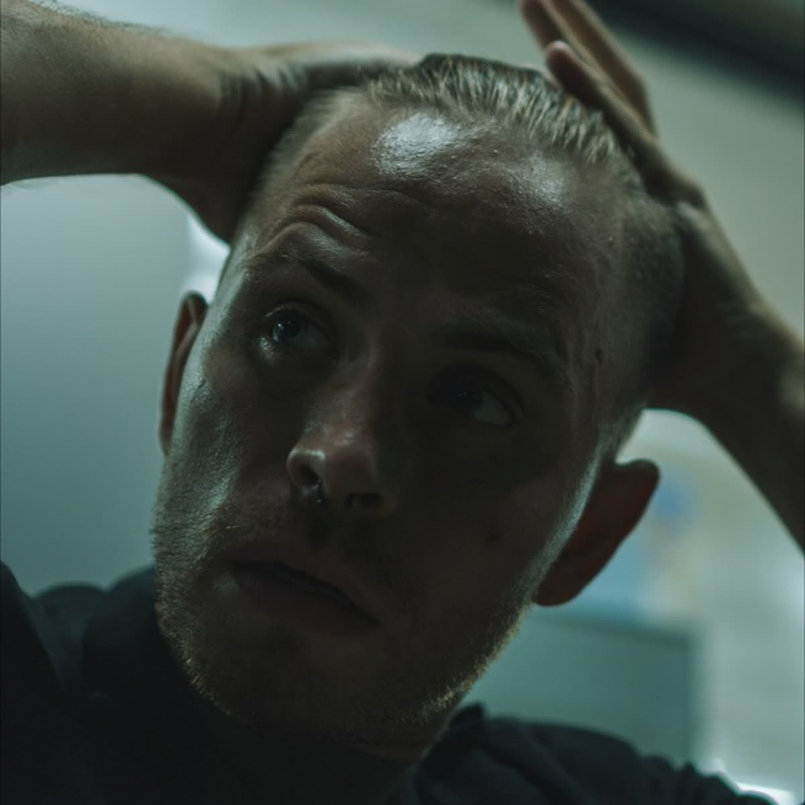

оператор · фотограф · режиссёрмосква
саша
декоров
оператор · фотограф · режиссёр
придумывает кадр. ставит его. снимает так, чтобы хотелось пересмотреть
придумывает кадр. ставит его. снимает так, чтобы хотелось пересмотреть

снимает · фотографирует · режиссирует · снимает · фотографирует · режиссирует · снимает · фотографирует · режиссирует · снимает · фотографирует · режиссирует ·
не привязан к одному жанру и не продаёт один и тот же приём всем подряд. может прийти оператором на готовую задачу. может придумать визуальный ход и поставить съёмку как режиссёр. может снять фотографию. ниже три операторские работы, которые уже вышли в мир и собрали миллионы просмотров
снимал ролики, которые набрали
8,3 млнпросмотров
1,3 млнпросмотров
862 тыспросмотров
цифры относятся к опубликованным роликам, где саша работал оператором
выбранные операторские работы
работа 01оператор
работа 02оператор
работа 03оператор
есть задача?
покажите её саше
можно прийти с готовым заданием или просто с мыслью «хочу вот так, но не знаю как». разберёмся
саша декоров · оператор · фотограф · режиссёр · москвадругая версия